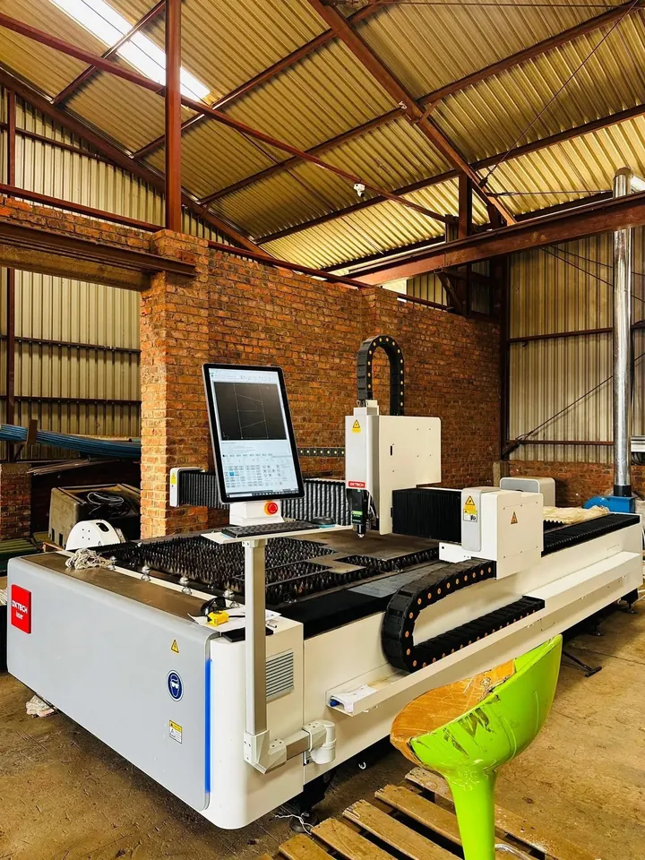
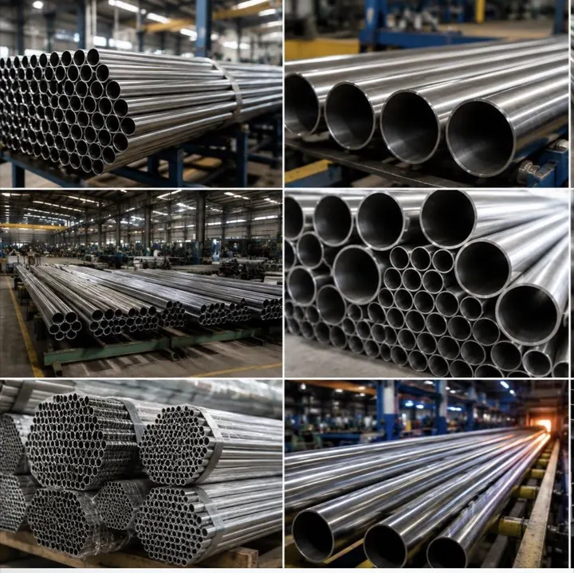
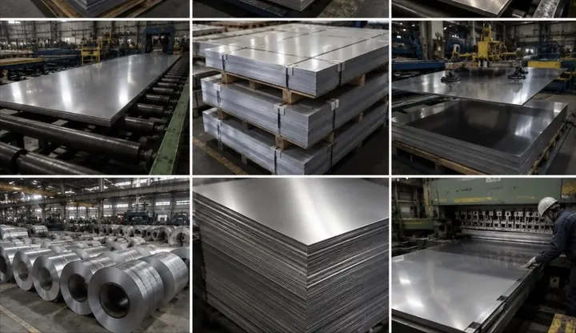

Harare · Zimbabwe
Built in steel. Erected on our own crane.
Structural steel, roof steelwork, laser cutting and lifting — one floor in Harare, one contract, one company accountable for the whole job.
Five things, done on our own floor.
Cutting, forming, welding and finishing happen under one roof in Harare — and the crane that puts the steel up belongs to the same company that made it.

Steel that goes up straight.
Braced frames, portal frames and process structures. Columns, rafters, bracing and purlins are fabricated on our floor in Harare, delivered as a marked package, and erected by the same company that made them — so there is no gap between the steel and the roof, and nobody to point at when the two do not meet.
- Portal framesWarehouses, workshops and industrial sheds
- Process structuresBraced frames, platforms and support steel
- MezzaninesFloor steel, stairs and edge protection
- ErectionDelivered and put up as one contract, on our own crane
Trusses, purlins, sheeting.
A roof is not three orders from three suppliers. Trusses are fabricated to your span, purlins are set out against them, and the sheeting is rolled to length from the same coil as the flashings — so ridge, barge and valley match the roof rather than approximate it.


IBR
Industrial · low pitchTrapezoidal rib. The default for warehouse and workshop roofs.
Corrugated
Domestic · curved workSinusoidal profile. Lighter, and the one to use where the roof has to be sprung to a radius.
Custom & flashings
Bespoke · finishingRidge, barge, valley and closers brake-pressed from the same coil as the sheet.
Cover widths, gauges, minimum roof pitch and purlin spacing are issued in writing with the quotation, against your roof and its exposure.
Nothing is committed to steel until you have signed the nest.
A DXTECH fiber laser, installed in our own workshop rather than bought as capacity from somebody else. Your DXF comes in, gets nested for yield, and goes back out as a layout and a sheet count for approval. Only then does it burn.



A 1:1 DXF or DWG with closed polylines. PDFs and hand-dimensioned sketches are redrawn in-house and returned for confirmation before anything is programmed.
Verified geometryKerf allowance, minimum hole diameter against thickness, bend reliefs and the radii the press can actually hold. Problems are flagged here, not on the shop floor.
Mark-up and query listParts are nested across the bed with common-line cutting where the geometry allows, so you pay for the steel in your parts rather than the offcut around them.
Nest layout and yieldYou receive the nest, the sheet count and the price. Nothing is committed to steel until that layout is approved in writing.
Approved cut fileFocus, gas and feed set per material. A first-off part is measured against the drawing before the balance of the nest runs.
First-off inspectionParts are broken out, deburred, counted against the cut list and bundled by assembly — labelled, so fitters are not sorting steel on site.
Labelled, counted deliveryDXTECH fiber laser, installed in the Harare workshop. Material range, thickness and tolerance are confirmed against your drawing when the nest is issued.

We lift what we build.
The crane is ours. Erection is scheduled against our own fabrication programme rather than a hire company's diary — which is why the steel and the lift turn up on the same day they were promised.
- Telescopic mobileRoad-going, rough-terrain
- In-houseErection is not subcontracted
- ScheduledAgainst our own fabrication programme
The floor, the plant, the work.
Photographs from the Harare workshop and from site. Project names, clients and values are not published here.


Material reference — stock imagery, not Kingson project photography


Five stages, and you are told where you are.
No stage promises a date here. Programme is agreed against your job and written into the quotation, because a shed on a cleared site and a roof over a running plant are not the same piece of work.
Enquiry
A call, a WhatsApp, a roof plan, or a photograph of the sketch off the site board. It reaches the same person either way.
Drawings and scope
We work out what is actually being asked for — span, profile, access, who is doing what — and come back with the questions before the price.
Estimating
A written quotation against a defined scope, so variations are visible rather than discovered.
Fabrication
Cut, formed, welded and finished on our own floor in Harare, marked up against the assembly drawings.
Delivery and erection
Delivered and, where the contract includes it, erected on our own crane and handed over complete.
One conversation, one accountable quote.
Send a roof plan, a section, a DXF, or a photograph of the sketch off the site board. Whichever you use, it reaches the same person.
WorkshopNo. 1262 Tynwald Industries, Harare
Your enquiry is ready to send.
This site cannot send on your behalf. Choose WhatsApp or email below and press send there — the message is already written out.
How we handle what you send us
Who we are. Kingson Trading (Pvt) Ltd, trading as Kingson Engineering, No. 1262 Tynwald Industries, Harare, Zimbabwe.
What we collect. Only what you type above. This site sets no cookies, runs no analytics and does not track you.
Where it goes. This form stores nothing. Pressing send opens WhatsApp or your email with the message written out, and you send it yourself — so your enquiry stays in that conversation, and reaches us the way any message would.
Your rights. Ask us what we hold, ask us to correct it, or ask us to delete it — call +263 772 262 869 or email kingsonnkm@gmail.com.
Answered plainly.
Kingson Engineering is a steelwork specialist in Harare, Zimbabwe. The company fabricates and erects structural steel, builds and sheets roofs, cuts plate and sheet on an in-house DXTECH fiber laser, fabricates stainless and general steelwork, and lifts with its own mobile crane.
Yes. Steel and sheeting can be supplied for your own contractor, or fabricated, delivered and erected by Kingson as a single contract — including the crane, so the lift is not subcontracted.
Harare and the surrounding industrial areas as standard, with fabrication delivered and erected elsewhere in Zimbabwe. Transport is priced per load in the quotation.
DXF or DWG at 1:1 with closed polylines is ideal. STEP files are accepted, and PDF or hand-dimensioned drawings are redrawn in-house and returned for approval before anything is cut.
Always. The nest layout, the sheet count and the price are issued for written approval, and a first-off part is measured against the drawing before the balance of the nest runs.
Call or WhatsApp +263 772 262 869, email kingsonnkm@gmail.com, or use the form on this page. Send drawings if you have them.